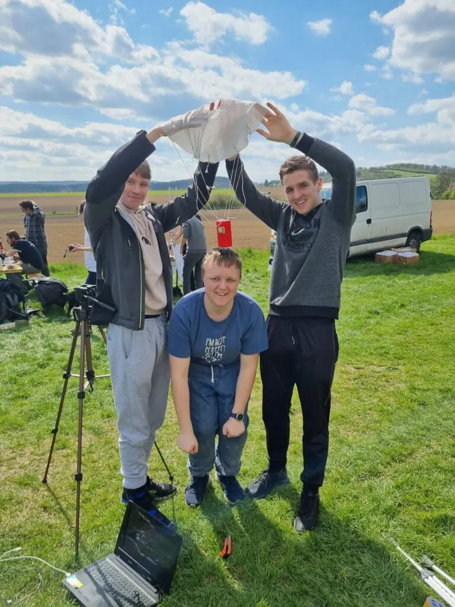
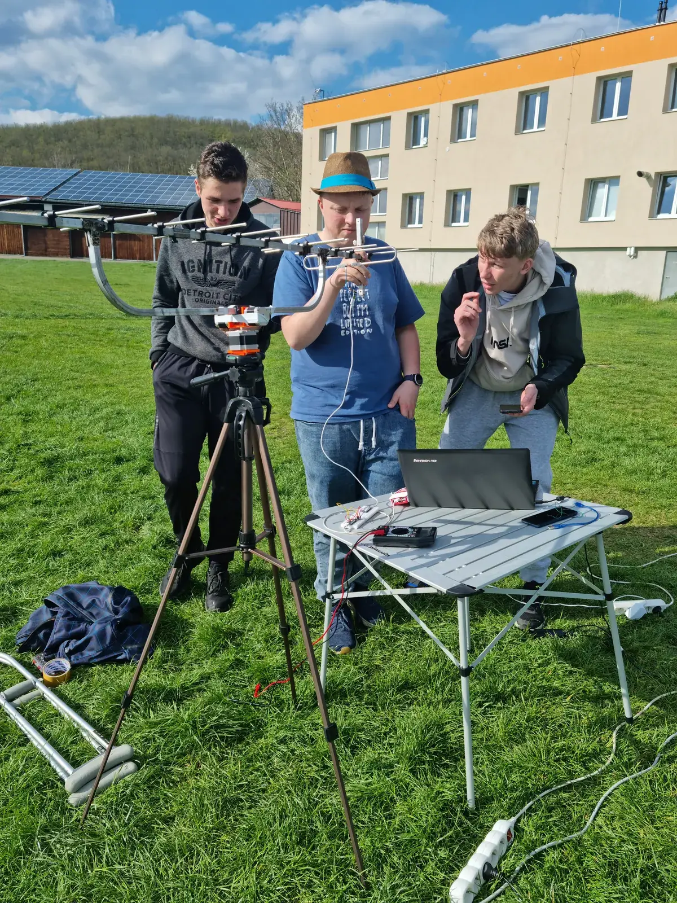
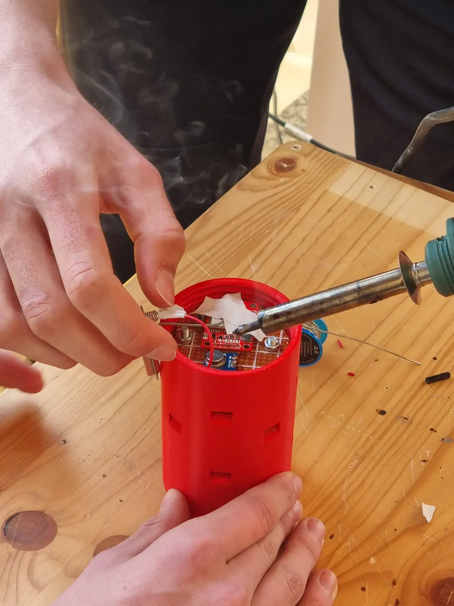

CanSat
Satelit o velikosti plechovky od nápoje. Studenti ho navrhnou, postaví, otestují a vypustí, a hodnotí se přitom všechno: technické řešení, plán mise, sebraná data i to, jestli tým projekt dotáhne do konce. Soutěž pořádá Evropská kosmická agentura a naše dílna je zázemím týmu IKAROS.
Co je CanSat
CanSat, zkratka pro „Can Satellite“, je soutěž organizovaná Evropskou kosmickou agenturou (ESA) a partnerskými institucemi.
Úkolem soutěžících je navrhnout, postavit a vypustit malý satelit, který velikostně odpovídá běžné plechovce od nápoje. Tento malý satelit je vybaven všemi klíčovými systémy, které mají reálné satelity, od napájecích a komunikačních systémů až po vědecké přístroje pro sběr dat.

- Soutěž
- CanSat
- Zkratka pro Can Satellite
- Organizátor
- ESA
- Evropská kosmická agentura a partnerské instituce
- Velikost
- Plechovka
- Odpovídá běžné plechovce od nápoje
- Fáze
- 04
- Od one-pageru po finále v ESA-ESTEC
- Tým
- IKAROS
- Ročník CanSat 2025/2026
Jak soutěž probíhá
Týmy nejprve odevzdají návrh mise a musí se kvalifikovat. Hodnotí se technické řešení, plán mise i schopnost týmu projekt dotáhnout.
Následuje návrh, výroba a testování modulu. Právě tady se naplno uplatní dílna: 3D tisk, elektronika a prototypování. Nejlepší týmy potom postupují do celorepublikového finále, kde svůj projekt prezentují odborné porotě a soutěží o hlavní ceny.


Proč se zapojit
CanSat není jen o technice a vědě. Je to příležitost získat praktické zkušenosti, které jsou nezbytné pro kariéru v oblasti inženýrství, vědy a technologie.
Účastníci se učí týmové práci, řešení problémů a inovativnímu myšlení. Každý tým musí nejen navrhnout a postavit svůj CanSat, ale také naplánovat misi, analyzovat data a prezentovat výsledky odborné porotě.
Pro mnohé účastníky se CanSat stává odrazovým můstkem k dalším úspěchům.
Mnozí pokračují ve studiích v oborech inženýrství, informatiky nebo fyziky a často získávají prestižní stáže a pracovní příležitosti. Soutěž je tak nejen skvělou zábavou, ale také investicí do budoucnosti.
Přidej se k týmu, kde se ambice mění v realitu. Tvá cesta začíná v naší dílně, v technickém kroužku.
Náš tým IKAROS
Díky špičkovému vybavení dílny, včetně 3D tiskáren, CNC strojů a pokročilých nástrojů, se zapojujeme do náročných technických soutěží. Sledujte cestu týmu IKAROS soutěží CanSat 2025/2026.
One-pager
Semifinále
Finále
ESA-ESTEC
Ikaros tentokrát nespadne. Přistane.
Živá telemetrie, simulace letu a celý tým na jednom místě.